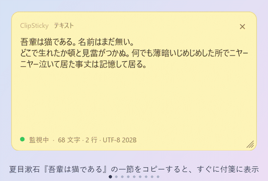
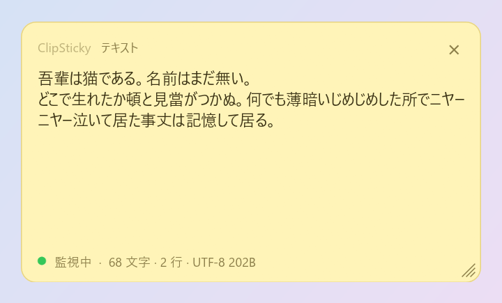
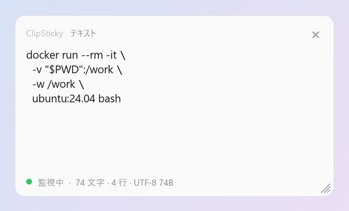
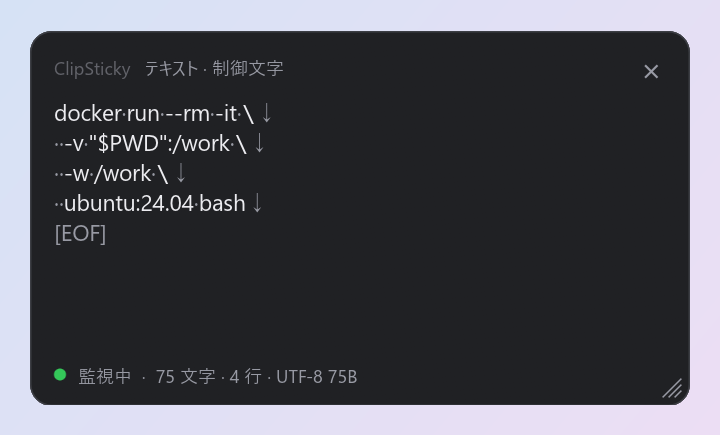
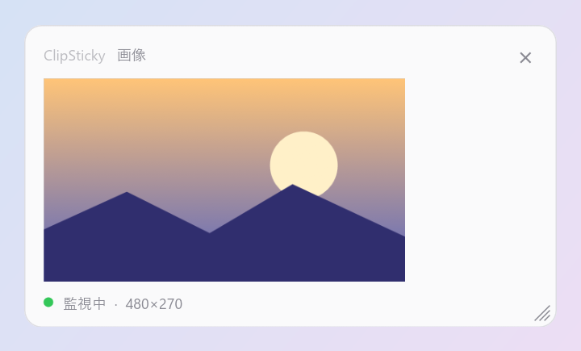
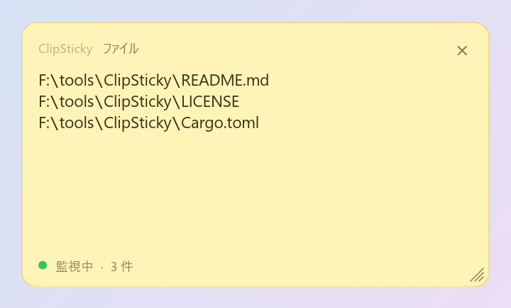
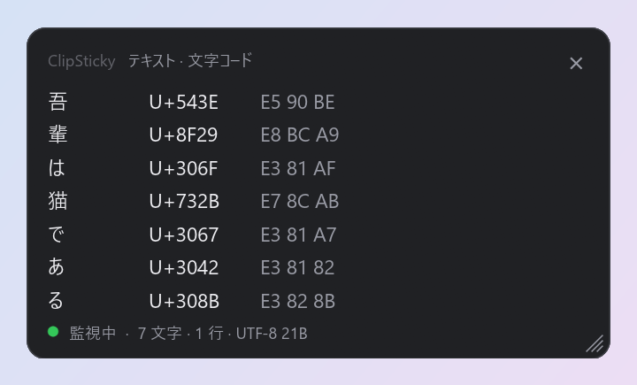
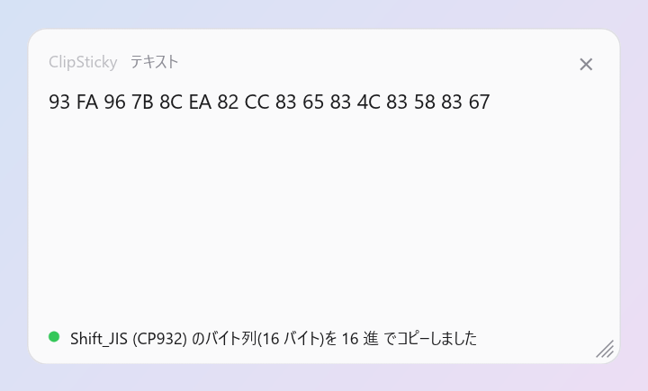

A small resident app that shows what you just copied in the corner of your screen, without ever stealing focus. For Windows and macOS.

Text, images and files (as a path list) appear the moment you copy.
Always on top, yet it never takes focus from the app you are using. No taskbar or Dock entry.
Control and invisible characters, a character code list, and character / line / byte counts.
Convert line endings, full-width ⇔ half-width, Unicode normalization and more, then re-copy.
Themes (Yellow / Light / Dark), opacity, background image, font, and 日本語 / English.
Lives in the tray / menu bar. Right-click the note for the same menu.
The screenshots use Japanese text and UI; the UI switches to English in the language setting.







When you copy a multi-line command, you can see at a glance whether it ends with a newline (↓), so you won't accidentally run it when you paste it into a terminal.
Download the zip for your OS from Releases.
ClipSticky-vX.Y.Z-windows-x64.zipclipsticky.exe anywhere and run itNo installer. The exe is unsigned, so if SmartScreen appears, choose "More info" → "Run anyway".
ClipSticky-vX.Y.Z-macos-universal.zipClipSticky.app to ApplicationsThe app is not notarized. If it will not open, run xattr -dr com.apple.quarantine /Applications/ClipSticky.app. Verified on an Apple M2.